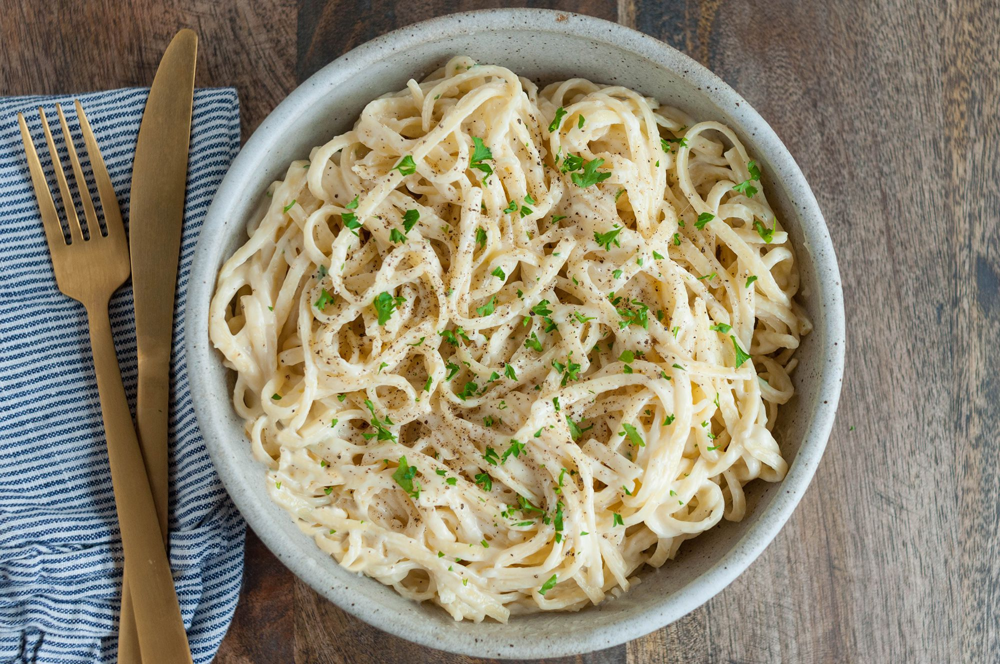

Alfredo Pasta

Description
Delicious italian recipe for Alfredo Pasta!
Ingredients
- (16 ounce) bag of cheese tortellini
- 1 tablespoon of vegetable oil
- 3 tablespoon butter
- 1/2 pound slice fresh mushrooms
- 1 pinch of garlic powder
- 1/3 cup of grated parmesan cheese
- 3 tablespoons of chopped parsley
- 1 teaspoon of salt
Steps
- Bring a large pot of lightly salted water to a boil.
Add tortellini. Cook, stirring occasionally, until tortellini
float to the top and the filling is hot, about 5 minutes. Drain.
-
Melt butter in another skillet over medium heat; cook and stir
mushrooms and garlic powder until mushrooms begin to soften,
about 3 minutes. Stir heavy cream into mushrooms and bring to
a boil. Reduce heat to medium-low and simmer until slightly
thickened, about 3 minutes. Add Parmesan cheese, parsley, and salt. Continue to cook until cheese is melted, about 1 minute.
-
Stir tortellini into mushroom-cream sauce. Simmer
until heated through, about 2 minutes.